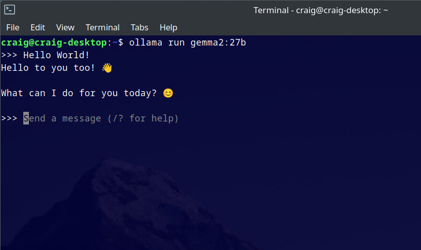
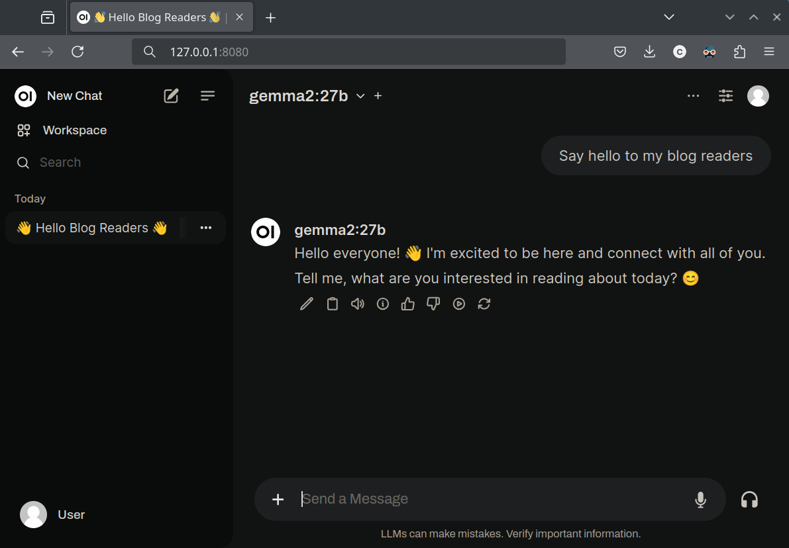

Running LLMs Locally
Recently I've been using the free version of ChaptGPT both in the browser and via the app. While this is generally a good experience there are some limitations with the free version. This got me thinking about running LLMs on my PC to avoid the pitfalls of subscription based models. The following are the steps that I undertook to get LLMs running locally with a web interface. As usual I'm running this on a Linux based PC.
Ollama
Ollama is a simple way to run LLMs locally. The installation is quite straightforward and uses a bash script. The recommended intall is to use the curl and pipe to sh. Feel free to inspect the script contents if you wish!
curl -fsSL https://ollama.com/install.sh | sh
Now for the fun part - running models. The readme contains a nice list of models and commands to run them. For example, to run Gemma2 27B see the below. Ollama will download the model and run it in the terminal.
ollama run gemma2:27b
You can chat directly with the LLM via this interface and to quit use the command "/bye".

CPU or GPU, that is the qestion
Ollama is good at detecting which hardware to use by default. If you have an NVIDIA GPU and have CUDA installed it will use the GPU. The same goes with AMD GPUs and ROCm. If you don't have an adequate GPU or the correct packages installed it will run on CPU. This is usually a bad experience that gets exponetially bad with the size of the model.
If you are running smaller models on a machine with a fast CPU and RAM you may have an adequate experience. The limiting factor when running on CPU will be the RAM speed. I'd recommended fast DDR5 if you are going this route.
When choosing which model to run you will need to consider how much VRAM you wish to consume. Most of the 7b or 8b models will use less than 8GB VRAM. Others will fit in a 16GB or 24GB video card and some will exceed that. If the model requires more RAM than your video card can supply then Ollama will split the model across the GPU/VRAM and CPU/RAM. This will end up being slow so it's best to avoid this situation. The number of model parameters will give a rough idea of VRAM requirements however the exact amount depends on many factors (quantization for example).
Web interface
The terminal is cool and all but what I really want is a web interface similar to that of ChatGPT. Forunately there are a few options here. I went with open-webui which is both open source easy to setup.
Installation is simple using docker. The following terminal command got me up and running:
docker run -d --network=host -v open-webui:/app/backend/data -e WEBUI_AUTH=False -e OLLAMA_BASE_URL=http://127.0.0.1:11434 --name open-webui --restart always ghcr.io/open-webui/open-webui:main
Now to access the web interface by opening a browser and navigating to http://127.0.0.1:8080. Note this port number could be
3000 or something else if running the standard docker commands to launch open-webio. The above config is what worked for me.
One you are in go to user icon - settings - admin settings - connections. Then under "Ollama API" enter: http://127.0.0.1:11434.
Click the refresh arrow to the left and you should see a green message box that says "Server connection verified".

At the top is a drop down list of all the Ollama models you have download - select one and get chatting!